กาลานุกรมงานวิจัย · Research Timeline
กว่าจะเป็นเว็บแอป "วัดไทยใสใส"
ทุกฟีเจอร์ในเว็บแอปนี้ไม่ได้คิดขึ้นลอย ๆ แต่เกิดจากกระบวนการวิจัย 4 ระยะ — R₁ → D₁ → R₂ → D₂ — ตามกรอบที่ได้รับทุนจากสำนักงานการวิจัยแห่งชาติ (วช.) หน้านี้เล่าเรื่องย้อนตามลำดับเวลา ว่าแต่ละขั้นเจออะไร ลำบากตรงไหน และผลที่ได้กลายเป็นฟีเจอร์ใดในระบบ โดยอ้างอิงจาก รายงานความก้าวหน้า ครั้งที่ 2 (รอบ 6 เดือน) ลงวันที่ 12 กันยายน 2569 ที่ส่งถึง วช.
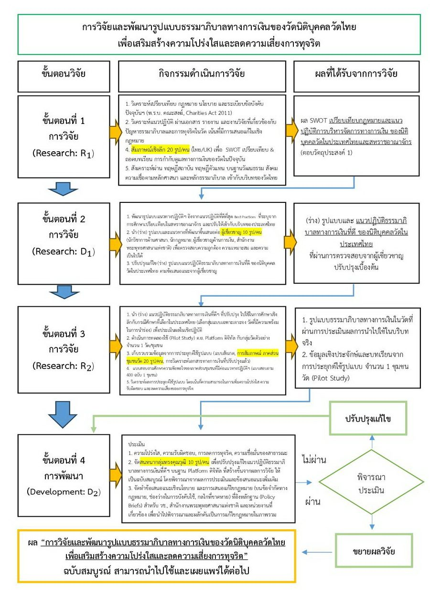
-
R₁
Research — ศึกษาปัญหาและเปรียบเทียบกฎหมายไทย–สหราชอาณาจักร เสร็จสิ้น
วิเคราะห์กฎหมายและมติ มส. เทียบกับ Charities Act 2011 / Charity Commission ใน 8 มิติ และสัมภาษณ์เชิงลึกผู้ให้ข้อมูลสำคัญ 22 รูป/คน (ไทย–UK) เพื่อหา "ช่องโหว่" ที่เกิดขึ้นจริง
-
D₁
Development — ร่างรูปแบบ แล้วให้ผู้เชี่ยวชาญ 10 ท่านตรวจ เสร็จสิ้น
สังเคราะห์ผล R₁ + SWOT เป็นร่างรูปแบบ (Draft 2) และสถาปัตยกรรมแพลตฟอร์ม ส่งผู้เชี่ยวชาญประเมิน แล้วปรับแก้ตามข้อเสนอ
-
R₂
Research — ทดลองใช้จริงในวัดต้นแบบ 1 แห่ง (Pilot / PAR) กำลังดำเนินการ
เริ่ม 29 ก.ค. 2569 ใช้ระบบตามรอบบัญชีรายเดือน 3 รอบ ร่วมกับชุมชน แล้วสำรวจความพึงพอใจ 400 ชุด
-
D₂
Development — สนทนากลุ่มผู้ทรงคุณวุฒิ และข้อเสนอเชิงนโยบาย/กฎหมาย กำลังดำเนินการ
สนทนากลุ่มผู้ทรงคุณวุฒิ 9 รูป/คน เมื่อ 30 ต.ค. 2569 — ยืนยันรูปแบบแล้ว · ขั้นถัดไป: จัดทำ Policy Brief ส่ง วช. สำนักงานพระพุทธศาสนาแห่งชาติ และมหาเถรสมาคม
หลักการของหน้านี้
- ข้อความและตัวเลขทุกรายการมาจากรายงานความก้าวหน้า/รายงานการศึกษาเบื้องต้น (Inception Report) ของโครงการ — แต่ละช่วงระบุหัวข้อ/ตารางที่อ้างอิงไว้ท้ายการ์ด สถานะแสดงตามรายงาน ณ วันที่ 12 ก.ย. 2569 · ยกเว้นขั้น D₂ ซึ่งอัปเดตตามผลการสนทนากลุ่มเมื่อ 30 ต.ค. 2569 (อ้างอิงร่างบทที่ 4)
- การ์ด สีเหลืองอำพัน คือความลำบากหรืออุปสรรค · การ์ด สีเขียว คือสิ่งที่ค้นพบและฟีเจอร์ในเว็บแอปที่ออกแบบมาตอบโจทย์นั้น
- ตามจริยธรรมการวิจัยในมนุษย์ (IRB เลขที่ ว.217/2569) ไม่เผยแพร่ชื่อ/ภาพของผู้ให้ข้อมูลและผู้เชี่ยวชาญ ปูมการวิจัย หรือข้อมูลบัญชีจริงของวัดต้นแบบ — ภาพถ่ายชุมชนในหน้านี้ปิดบังใบหน้าแล้ว
-
ก่อนเริ่มโครงการ · พ.ศ. 2568 – ต้น 2569
จุดตั้งต้นมติ มส. ออกมาแล้ว แต่ยังมี "ช่องว่าง" ที่วัดเล็กทำตามไม่ได้
มหาเถรสมาคมมีมติที่ 620/2568 (30 ก.ค. 2568) และ 495/2568 กำหนดให้เปิดบัญชีธนาคาร เบิกถอนด้วยลายเซ็นร่วมอย่างน้อย 3 คน (เจ้าอาวาส ไวยาวัจกร กรรมการวัด) ทำบัญชีรายรับ-รายจ่ายรายเดือน และรายงานเงินคงเหลือ — เป็นก้าวสำคัญ แต่โครงการวิจัยตั้งข้อสังเกตว่า
- มติยังสงวนอำนาจตัดสินใจขั้นสุดท้ายไว้ที่เจ้าอาวาส หากเห็นขัดกับกรรมการ — การถ่วงดุลจึงยังไม่สมบูรณ์
- เน้นกลไกภายในวัดและไวยาวัจกรที่เจ้าอาวาสแต่งตั้ง ขาดการมีส่วนร่วมของชุมชนและการตรวจสอบจากภายนอก
- การบังคับใช้ยังไม่ทั่วถึงในวัดขนาดเล็กและพื้นที่ห่างไกล
โจทย์วิจัยที่ได้ยังไม่มีงานวิจัยที่พัฒนา "รูปแบบธรรมาภิบาลทางการเงิน" ซึ่งบูรณาการ พระวินัย + กฎหมายไทย + แนวปฏิบัติสากล โดยทดลองจริงกับชุมชนวัดแบบมีส่วนร่วม (PAR) — จึงเป็นที่มาของโครงการนี้ (ดูฐานทางพระวินัยและกฎหมายในหน้า พระวินัย & กฎหมาย)
อ้างอิง: รายงานการศึกษาเบื้องต้น (Inception Report) ข้อ 1 ที่มาและความสำคัญ · ทุนวิจัย 400,000 บาท ระยะเวลา 12 เดือน เริ่ม 13 มี.ค. 2569
-
13–14 มีนาคม 2569 · เดือนที่ 1
R₁ · เตรียมการลงนามสัญญารับทุน และยื่นขอจริยธรรมการวิจัยในมนุษย์
13 มี.ค. ลงนามสัญญา เริ่มโครงการ · 14 มี.ค. ยื่นขอรับรองจริยธรรมการวิจัยในมนุษย์ต่อสถาบันวิจัยพุทธศาสตร์ มจร. พร้อมทบทวนวรรณกรรม จัดทำกรอบแนวคิด (Agency Theory · Institutional Theory · หลักธรรมาภิบาลบนฐานพระธรรมวินัยเถรวาท) และร่างเครื่องมือวิจัยระยะ R₁ — แบบสัมภาษณ์กึ่งโครงสร้าง 5 ประเด็นหลัก
อ้างอิง: รายงานความก้าวหน้า ตารางที่ 6.1 เดือนที่ 1 (สถานะ: เสร็จสิ้นตามแผน) · ข้อ 2.3
-
10–29 เมษายน 2569 · เดือนที่ 2
R₁ · ลงพื้นที่เดินสำรวจ 4 อำเภอ เพื่อหาวัดที่ "ใช้ระบบได้จริง" ไม่ใช่วัดที่สะดวกที่สุด
ลงสำรวจความพร้อมในวัดและชุมชนห่างไกลของ อ.บ้านโคก อ.ฟากท่า อ.ตรอน และ อ.เมือง จ.อุตรดิตถ์ — ตรวจสัญญาณอินเทอร์เน็ตและเส้นทางเข้าถึงชุมชน เพราะหากระบบใช้ไม่ได้ในวัดชนบทห่างไกล ก็ไม่อาจเรียกว่าเป็นทางออกของวัดส่วนใหญ่ของประเทศ พบวัดที่พร้อมและสนใจเบื้องต้น 3 วัด ใน 2 อำเภอ
ความลำบาก- ต้นเดือน พ.ค. มี 1 วัดขอถอนความสนใจ เหลือ 2 วัด ต้องหาวัดสำรองเพิ่มในพื้นที่ อ.เมือง — จึงสำรวจเกินกว่า 1 วัดตั้งแต่ต้น เพื่อรับมือความเสี่ยงถอนตัวกลางโครงการ
- ทางลัดคือขอรายชื่อวัดจากเจ้าคณะผู้ปกครอง แต่ผู้วิจัยเลือกไม่ทำ เพราะขัดหลักจริยธรรมวิจัย (เคารพในบุคคล ไม่ก่ออันตราย ความยุติธรรม) — วัดต้องสมัครใจจริง
ได้อะไรมาหนังสือขออนุญาตถึงเจ้าคณะจังหวัด ก่อนลงพื้นที่ — แตะภาพเพื่อขยาย- เกณฑ์เลือกวัดต้นแบบ: วัดราษฎร์ขนาดกลางในชนบท ห่างที่ว่าการอำเภอและสาขาธนาคารพาณิชย์มากกว่า 30 กม. และไม่ใช่พื้นที่ปกครองของคณะผู้วิจัย
- ตอบข้อจำกัดข้อ "วัดเล็ก/ห่างไกลบังคับใช้ไม่ทั่วถึง" ด้วยการทดสอบในเงื่อนไขที่ยากที่สุดแทนการทดสอบในวัดที่พร้อมอยู่แล้ว (Extreme Case)
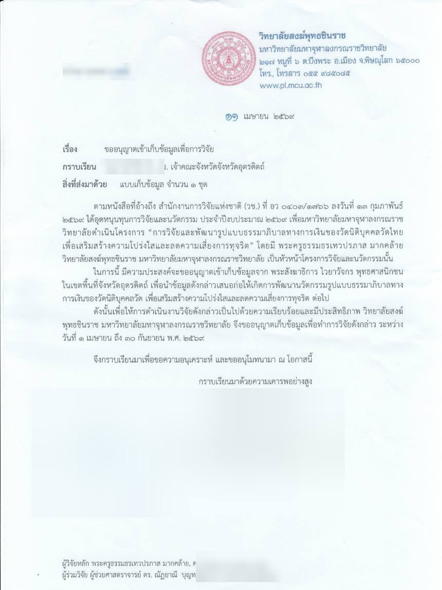
11 เม.ย. 2569 · หนังสือขออนุญาตเก็บข้อมูลเพื่อการวิจัย ขออนุญาตเก็บข้อมูลจากพระสังฆาธิการ ไวยาวัจกร และพุทธศาสนิกชนในพื้นที่ ช่วง 1 เม.ย.–30 ก.ย. 2569 ตามลำดับชั้นการปกครอง — ไม่ได้ขอรายชื่อวัดจากเจ้าคณะ การเลือกวัดต้นแบบยังใช้เกณฑ์ของผู้วิจัยเองตามที่กล่าวข้างต้น
เอกสารที่แสดงเป็นฉบับปกปิด: ลายเซ็น ชื่อผู้ลงนาม ลายมือกำกับ หมายเลขหนังสือ และเบอร์โทรศัพท์ถูกเบลอ · ไม่ใช่สำเนาสำหรับอ้างอิงทางราชการ
อ้างอิง: รายงานความก้าวหน้า ข้อ 1.2 ผู้ให้ข้อมูลสำคัญ องค์กรและหน่วยงานที่เกี่ยวข้อง · ข้อ 1.4 การคัดเลือกพื้นที่นำร่อง · ตารางที่ 6.1 เดือนที่ 2
-
1 พฤษภาคม 2569 (ทราบผล 10 พ.ค.) · เดือนที่ 3
R₁ · อุปสรรคแรกรอ IRB นานกว่าแผน ~45 วัน — ระหว่างรอ ทำอะไรได้บ้าง
คณะกรรมการจริยธรรมฯ รับรองเมื่อ 1 พ.ค. 2569 (เลขที่ ว.217/2569) แต่ผู้วิจัยทราบผลเมื่อ 10 พ.ค. ก่อนหน้านั้น ไม่อาจสัมภาษณ์เก็บข้อมูลวิจัยเต็มรูปแบบได้ ซึ่งเป็นหัวใจของ R₁
"ล่าช้าเพราะ IRB (อนุมัติเมื่อ 1 พ.ค. ผู้วิจัยทราบผลอนุมัติเมื่อ 10 พ.ค. 2569)"— รายงานความก้าวหน้า ตารางที่ 6.1 แผนเทียบผลรายเดือน เดือนที่ 3
วิธีบริหารความเสี่ยงด้านเวลา (ตามรายงาน)ลำดับการขออนุญาตก่อนเก็บข้อมูล — หนังสือขออนุญาตเป็นขั้นตอนของหน่วยงาน แยกจากการรับรองจริยธรรม (IRB)- ประสานพื้นที่และผู้เกี่ยวข้องล่วงหน้าในลักษณะที่ไม่ใช่การเก็บข้อมูลวิจัย — พบประธานองค์กรการกุศลวัดไทยในอังกฤษที่เดินทางกลับไทย และประสานเลขานุการสำนักงานกำกับดูแลพระธรรมทูตไปต่างประเทศอย่างไม่เป็นทางการ
- เตรียมตารางนัดหมายให้พร้อม เพื่อเริ่มสัมภาษณ์ได้ทันทีที่ได้ IRB
- เร่งพัฒนาโค้ดและระบบแอปพลิเคชันบัญชีวัดในส่วนที่ไม่เกี่ยวข้องกับการเก็บข้อมูลจากมนุษย์ ควบคู่กันไป
- 14 มี.ค. ยื่นขอรับรองจริยธรรมการวิจัยในมนุษย์ ต่อสถาบันวิจัยพุทธศาสตร์ มจร.
- 11 เม.ย. วิทยาลัยสงฆ์ออกหนังสือขออนุญาตเก็บข้อมูลเพื่อการวิจัย 3 ฉบับ ถึงองค์กรพระธรรมทูตไทยในสหราชอาณาจักรและไอร์แลนด์ · สำนักงานกำกับดูแลพระธรรมทูตไปต่างประเทศ · เจ้าคณะจังหวัดในพื้นที่สำรวจ
- 17 เม.ย. เข้าพบชี้แจงกรอบแนวคิดการวิจัยและขออนุญาตประสานเครือข่าย — ยังไม่ใช่การเก็บข้อมูลวิจัย
- 1 พ.ค. คณะกรรมการจริยธรรมฯ รับรอง (ว.217/2569) · ผู้วิจัยทราบผล 10 พ.ค. จึงเริ่มสัมภาษณ์เก็บข้อมูลได้
- 28 พ.ค. สำนักงานพระพุทธศาสนาจังหวัดทำบันทึกข้อความเสนอผู้ว่าราชการจังหวัดให้ผู้วิจัยเข้าเก็บข้อมูลในพื้นที่ (ดูโหนดถัดไป)
17 เมษายน 2569 — ประสานล่วงหน้าระหว่างรอ IRB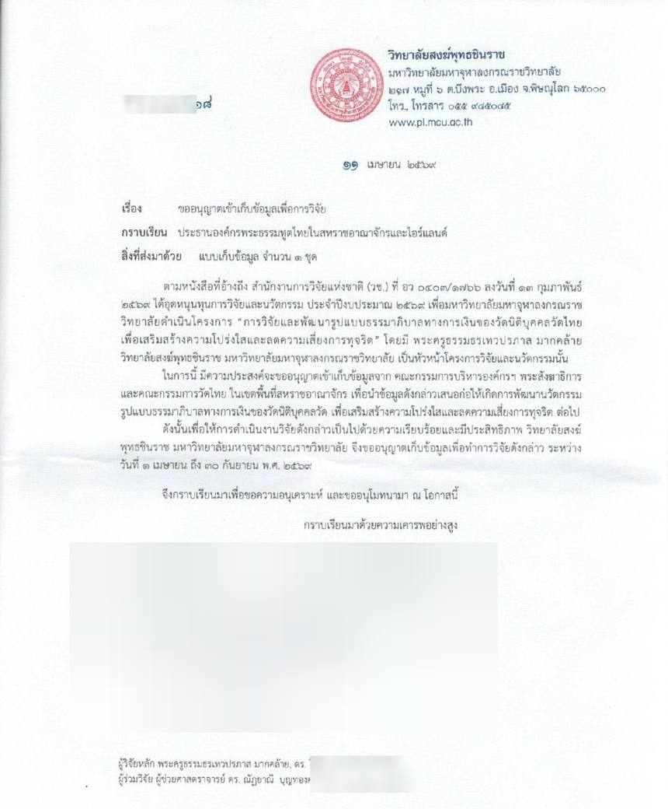
11 เม.ย. 2569 · ขออนุญาตเก็บข้อมูล ถึงประธานองค์กรพระธรรมทูตไทยในสหราชอาณาจักรและไอร์แลนด์ 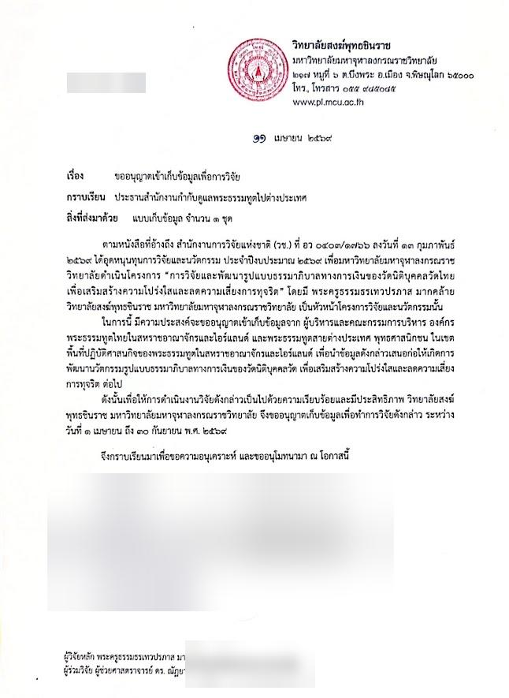
11 เม.ย. 2569 · ขออนุญาตเก็บข้อมูล ถึงประธานสำนักงานกำกับดูแลพระธรรมทูตไปต่างประเทศ 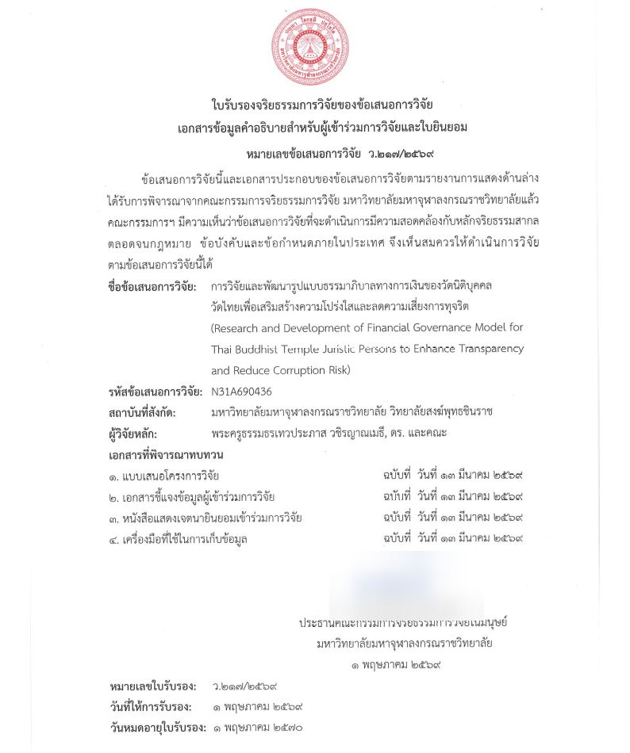
1 พ.ค. 2569 · ใบรับรองจริยธรรมการวิจัยในมนุษย์ ว.217/2569 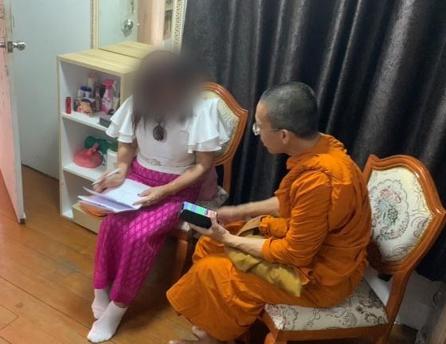
ขออนุญาตสัมภาษณ์ล่วงหน้ากับประธานองค์กรการกุศลวัดไทยในอังกฤษที่เดินทางกลับไทย — สัมภาษณ์จริงหลังได้ IRB 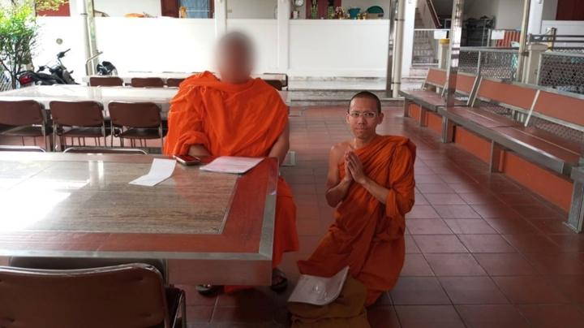
เข้าพบเลขานุการสำนักงานกำกับดูแลพระธรรมทูตไปต่างประเทศ ชี้แจงกรอบแนวคิดการวิจัย 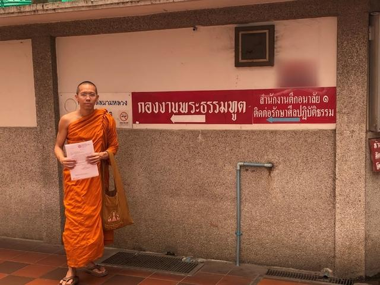
ผู้วิจัยถือหนังสือขออนุญาตหน้ากองงานพระธรรมทูต เอกสารที่แสดงเป็นฉบับปกปิด: ลายเซ็น ชื่อผู้ลงนาม ลายมือกำกับ หมายเลขหนังสือ และเบอร์โทรศัพท์ถูกเบลอ · ไม่ใช่สำเนาสำหรับอ้างอิงทางราชการ · ภาพถ่ายเบลอใบหน้าผู้ให้ข้อมูลทุกคน (ไม่เบลอเฉพาะผู้วิจัย)
ผลที่ตามมาเวลาที่รอไม่สูญเปล่า — โค้ดและระบบบัญชีวัดในส่วนที่ไม่เกี่ยวกับข้อมูลจากมนุษย์ถูกพัฒนาไปล่วงหน้า เพื่อรอรับ "ข้อค้นพบ" จากการสัมภาษณ์มาปรับเป็นกลไกควบคุมในขั้นถัดไป
- โครงระบบบัญชีวัด (ส่วนที่ไม่เกี่ยวกับข้อมูลวิจัย)
อ้างอิง: รายงานความก้าวหน้า ข้อ 7 รายละเอียดการดำเนินงาน · ข้อ 2.2 · ตารางที่ 6.1 · ภาคผนวก ข (หลักฐานจริยธรรมการวิจัยในมนุษย์)
-
พฤษภาคม – มิถุนายน 2569 · เดือนที่ 3–4
R₁ · แผนเร่งรัด (Crash Plan)สัมภาษณ์ 22 รูป/คน ในประเทศไทยและสหราชอาณาจักร — และสิ่งที่พวกเขาเล่าให้ฟัง
- 22รูป/คน
ผู้ให้ข้อมูลสำคัญ - 3กลุ่มผู้ให้ข้อมูล
- 8มิติเปรียบเทียบ
กฎหมายไทย–UK - 3รูปแบบประทุษกรรม
ที่พบ
- International Linkage (6) — พระธรรมทูตและกรรมการบริหารองค์กรการกุศลวัดไทยในสหราชอาณาจักร
- Contextual (12) — เจ้าอาวาส ไวยาวัจกร กรรมการการเงินวัด ตั้งแต่พระอารามหลวง วัดชุมชนเมือง วัดชนบท จนถึงวัดชายแดนห่างไกล
- Policy & Regulatory (4) — ผู้แทน สตง. สรรพากรพื้นที่ ป.ป.ช. และสำนักงานพระพุทธศาสนาจังหวัด
ความลำบากภาพการสัมภาษณ์ภาคสนาม — เบลอใบหน้าผู้ให้ข้อมูลทุกคน ไม่เบลอเฉพาะผู้วิจัย · แตะภาพเพื่อขยาย- เวลาหายไป ~45 วัน แต่ผู้วิจัยตั้งเป้าให้สัมภาษณ์ภาคสนามทั้งไทยและอังกฤษเสร็จภายใน 2 สัปดาห์หลังได้ IRB → ทำ Crash Plan เร่งเก็บ–ถอดเทป–วิเคราะห์ควบคู่กัน
- ผู้ให้ข้อมูลส่วนหนึ่งอยู่ในสหราชอาณาจักร — โชคดีที่ช่วงรอยต่อ พ.ค.–มิ.ย. มีพิธีปิดอบรมพระธรรมทูตสายต่างประเทศที่ มจร. และพิธีพระราชทานรางวัลเสาเสมาธรรมจักร ทำให้ผู้บริหารวัดไทยในสหราชอาณาจักรเดินทางกลับไทย ผู้วิจัยนัดเข้าพบตัวต่อตัวได้หลายรูป ส่วนที่เหลือสัมภาษณ์ทางไกล
- ทุกคนต้องมีหลักฐานครบ: หนังสือยินยอมตาม IRB · Log Book · ถอดเทป · บันทึกการรับ/สละค่าตอบแทน (กรณีผู้ให้ข้อมูลอยู่ในอังกฤษ มีหลักฐานการโอนเงินและหน้าจอสื่อสารทางไกล)
หนังสือระดับจังหวัด ก่อนเก็บข้อมูลในพื้นที่ — แตะภาพเพื่อขยายสัมภาษณ์เชิงลึกและลงนามในหนังสือ ณ กุฏิรับรอง — ผู้ให้ข้อมูลเดินทางกลับไทยชั่วคราว 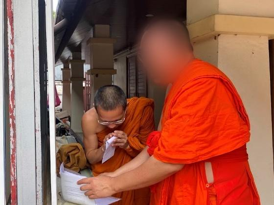
สัมภาษณ์ที่วัดในประเทศไทย — ผู้วิจัยรับ–ส่งเอกสารกับผู้ให้ข้อมูล 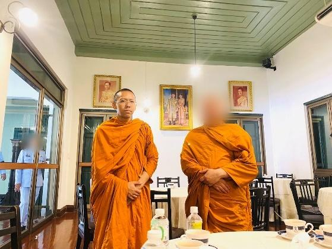
สัมภาษณ์ ณ อาคารรับรองพระสงฆ์ ขณะผู้ให้ข้อมูลเดินทางกลับไทยชั่วคราว สัมภาษณ์นอกประเทศ ขณะผู้ให้ข้อมูลเดินทางกลับเอเชียชั่วคราว — ผู้วิจัยไม่เบิกค่าเดินทางไปสัมภาษณ์ 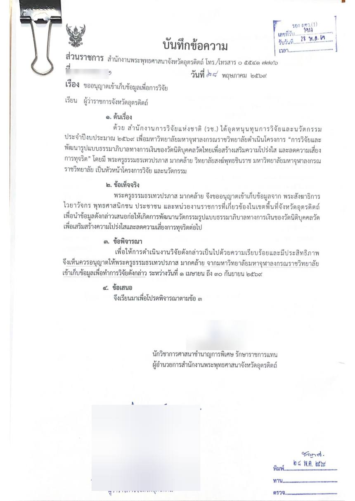
28 พ.ค. 2569 · บันทึกข้อความ สำนักงานพระพุทธศาสนาจังหวัด ถึงผู้ว่าราชการจังหวัด เสนอให้ผู้วิจัยเข้าเก็บข้อมูลจากพระสังฆาธิการ ไวยาวัจกร พุทธศาสนิกชน ประชาชน และหน่วยงานราชการที่เกี่ยวข้องในพื้นที่ ช่วง 1 เม.ย.–30 ก.ย. 2569 — มีผู้บริหารจังหวัดลงนามรับทราบกำกับ (ปกปิดลายมือ)
เอกสารที่แสดงเป็นฉบับปกปิด: ลายเซ็น ชื่อผู้ลงนาม ลายมือกำกับ หมายเลขหนังสือ และเบอร์โทรศัพท์ถูกเบลอ · ไม่ใช่สำเนาสำหรับอ้างอิงทางราชการ · ภาพถ่ายเบลอใบหน้าผู้ให้ข้อมูลทุกคน ไม่ระบุชื่อและสถานที่ของผู้ให้ข้อมูล
ข้อค้นพบ: "แผนประทุษกรรม" 3 มิติ → ฟีเจอร์ที่ออกแบบมาตอบ① กู้ยืมนอกระบบบัญชีวัด — ใช้นามนิติบุคคลวัดทำสัญญากู้ โดยไม่บันทึกภาระหนี้ในบัญชีวัด
- ทุกรายการเข้าบัญชีเดียว มีสถานะ Draft → Pending → Audited
- ร่องรอยผู้บันทึก/ผู้ตรวจ (Audit Trail)
② ปะปนบัญชีส่วนตัวกับเงินวัด (ผลประโยชน์ทับซ้อน)
- ทุกรายการผูกกับ "บัญชีของวัด" (เงินสด/บัญชีธนาคารที่ลงทะเบียน)
- ระบุผู้บันทึก + แบ่งสิทธิ์ผู้ใช้ตามบทบาท
③ ระบบรับบริจาคขาดร่องรอยตรวจสอบ — ไม่มีใบเสร็จมาตรฐาน ไม่เชื่อมระบบ e-Donation
- บันทึกผู้บริจาคด้วยเลขประจำตัว 13 หลัก
- ใบอนุโมทนาบัตร e-Donation + ไฟล์นำส่งกรมสรรพากร
คลิปประกอบท้ายหัวข้อนี้ — ช่วยทำความเข้าใจเรื่องที่อ่านข้างต้น · กดเล่นได้ที่นี่หลักฐานที่ไม่เผยแพร่: รายนาม ภาพต้นฉบับ (ภาพที่แสดงข้างต้นเป็นฉบับเบลอใบหน้า) และบันทึกถอดเทปของผู้ให้ข้อมูลทั้ง 22 รูป/คน (ภาคผนวก ง.1–ง.2 ของรายงาน) เปิดเฉพาะผู้ประเมินโครงการ เพื่อคุ้มครองผู้ให้ข้อมูลตามเงื่อนไข IRB และ PDPA
คลิปประกอบ · R₁ · แผนเร่งรัด · เปิดบน YouTube ↗ ตัวเล่นจาก YouTube จะโหลดเมื่อกดเล่นเท่านั้น (ใช้โหมดความเป็นส่วนตัวขั้นสูงของ YouTube)
อ้างอิง: รายงานความก้าวหน้า ข้อ 1.2.2–1.2.3 · ข้อ 2.4 · ตารางที่ 6.1 เดือนที่ 4 · ตารางที่ 6.2 ข้อ 1 · เอกสารแนบ ก ร่างบทที่ 4 หัวข้อ 4.1.2–4.1.3 · การจับคู่ "ข้อค้นพบ → ฟีเจอร์" ดูตารางสรุปท้ายหน้า
- 22รูป/คน
-
24–30 มิถุนายน 2569 · เดือนที่ 4
D₁ · ผู้เชี่ยวชาญ 10 ท่านตรวจร่างรูปแบบ"ร่างโมเดล Draft 2" ต้องผ่านสายตาผู้เชี่ยวชาญด้านตรวจสอบ ภาษี กฎหมาย และคณะสงฆ์
สังเคราะห์ผลสัมภาษณ์ R₁ + SWOT + Matrix เปรียบเทียบไทย–UK เป็น Draft 2 พร้อมสถาปัตยกรรมแพลตฟอร์ม แล้วส่งให้ผู้เชี่ยวชาญและผู้ทรงคุณวุฒิ 10 ท่าน จาก สตง. · ป.ป.ช. · สรรพากรพื้นที่ · สำนักงานพระพุทธศาสนาจังหวัด · สภาทนายความ · นักวิชาการด้านบัญชีการเงิน · ผู้แทนปกครองคณะสงฆ์ ประเมินรายบุคคลช่วงปลายเดือนมิถุนายน (ระหว่างวันที่ 24–30 มิ.ย.)
- 10/10ผู้เชี่ยวชาญ
ประเมินครบ - 4.50–4.80ความเหมาะสม
(เต็ม 5) - 0.98IOC ภาพรวม
ผ่านทุกข้อ
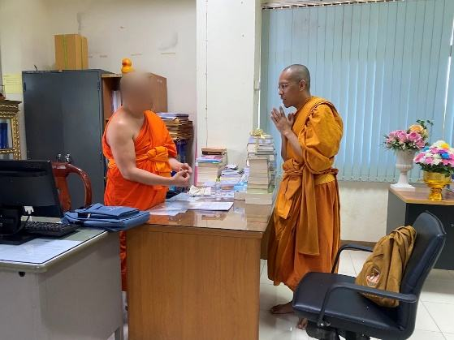
ผู้ทรงคุณวุฒิฝ่ายสงฆ์ (วิชาการพระพุทธศาสนา) — ผู้วิจัยเข้าพบเพื่อชี้แจงร่างรูปแบบและขอความเห็น 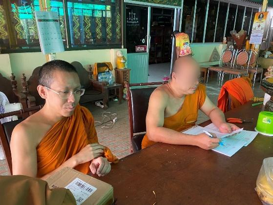
ผู้ทรงคุณวุฒิฝ่ายปกครองคณะสงฆ์ — กรอกแบบประเมินร่างรูปแบบ ผู้ตรวจเงินแผ่นดิน (สตง.) — รับหนังสือขอความอนุเคราะห์และแบบประเมิน ผู้บริหารหน่วยงานตรวจเงินแผ่นดิน — ให้คำปรึกษาในขั้นตอนตรวจแบบประเมินเพิ่มเติม (1/2) ผู้บริหารหน่วยงานตรวจเงินแผ่นดิน — ให้คำปรึกษาในขั้นตอนตรวจแบบประเมินเพิ่มเติม (2/2) ณ ห้องทำงาน ผู้ทรงคุณวุฒิด้านภาษี (สรรพากร) — รับหนังสือและแบบประเมิน ผู้ทรงคุณวุฒิจาก ป.ป.ช. — รับหนังสือขอความอนุเคราะห์ ผู้ทรงคุณวุฒิจากสำนักงานพระพุทธศาสนา — ส่งมอบเอกสารในห้องทำงาน ผู้ทรงคุณวุฒิด้านการเงินบัญชีภาครัฐ — รับหนังสือและแบบประเมิน 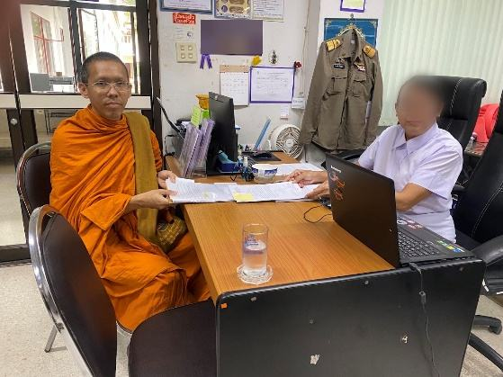
ผู้ทรงคุณวุฒิภาครัฐ (ด้านวัฒนธรรม) — ส่งมอบเอกสารที่โต๊ะทำงาน ผู้ทรงคุณวุฒิด้านการเงินการคลังท้องถิ่น — รับหนังสือและแบบประเมิน 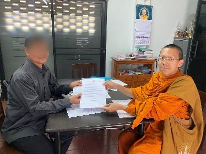
ผู้ทรงคุณวุฒิด้านกฎหมาย (สภาทนายความ) — ส่งมอบ–รับเอกสารที่โต๊ะประชุม ภาพชุดนี้คัดจากภาคผนวก ง.3 ของรายงาน (12 ภาพ จากการพบผู้ทรงคุณวุฒิทั้ง 10 ท่าน) · เผยแพร่เฉพาะฉบับที่ปิดบังใบหน้าผู้ทรงคุณวุฒิ บุคคลในฉากหลัง ป้ายชื่อ บัตรประจำตัวและป้ายหน่วยงาน · ไม่เปิดเผยชื่อ-สกุล ตำแหน่งเฉพาะและที่ทำงาน — ระบุเพียงสายงาน · ผู้วิจัยปรากฏตัวทุกภาพโดยไม่เบลอ
ข้อเสนอแนะที่ต้องรับมาแก้ (ไม่ใช่แค่คะแนนสวย)- เพิ่มกลไก Multi-signature Authorization ในการอนุมัติจ่ายเงิน
- กำหนดสิทธิ์ตามบทบาท (Role-Based Access Control)
- ต้องมี ร่องรอยตรวจสอบย้อนหลัง (Audit Trail)
- ต้องมี หน้าจอแสดงผลสาธารณะ (Public Disclosure Dashboard) ที่ใช้ง่าย ไม่สร้างภาระเกินสมควรแก่พระสงฆ์
ก่อนหน้านี้ ผู้ทรงคุณวุฒิที่ตรวจรายงานรอบก้าวหน้า 2 เดือนก็ให้ข้อเสนอ 5 ข้อ เช่น ให้กำหนดตัวชี้วัดเชิงระบบให้เป็นรูปธรรม และเพิ่มกรอบ Conflict of Interest — ซึ่งถูกนำไป "ออกแบบระบบอนุมัติและตรวจสอบร่วมของชุมชน"
ข้อเสนอ → ฟีเจอร์ในเว็บแอป- ผู้ใช้งาน 3 ระดับ (ผู้ดูแลระบบ · เจ้าหน้าที่บัญชี · ผู้ตรวจสอบ)
- บันทึก → ส่งตรวจ → ผู้ตรวจสอบอนุมัติ/ตีกลับ → ล็อกเป็น Audited (ผู้บันทึกกับผู้ตรวจสอบเป็นคนละคนเสมอ)
- ร่องรอยการบันทึก/แก้ไข + ความเห็นผู้ตรวจสอบ
- หน้าเว็บสาธารณะ แสดงเฉพาะยอดที่ผ่านการสอบทาน (Audited) แล้ว
คลิปประกอบท้ายหัวข้อนี้ — ช่วยทำความเข้าใจเรื่องที่อ่านข้างต้น · กดเล่นได้ที่นี่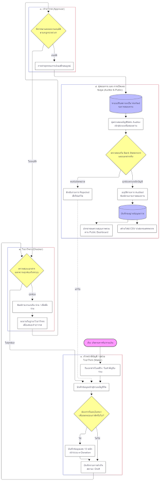
ภาพที่ 1 · System Flowchart ในรายงาน (แตะเพื่อขยาย) 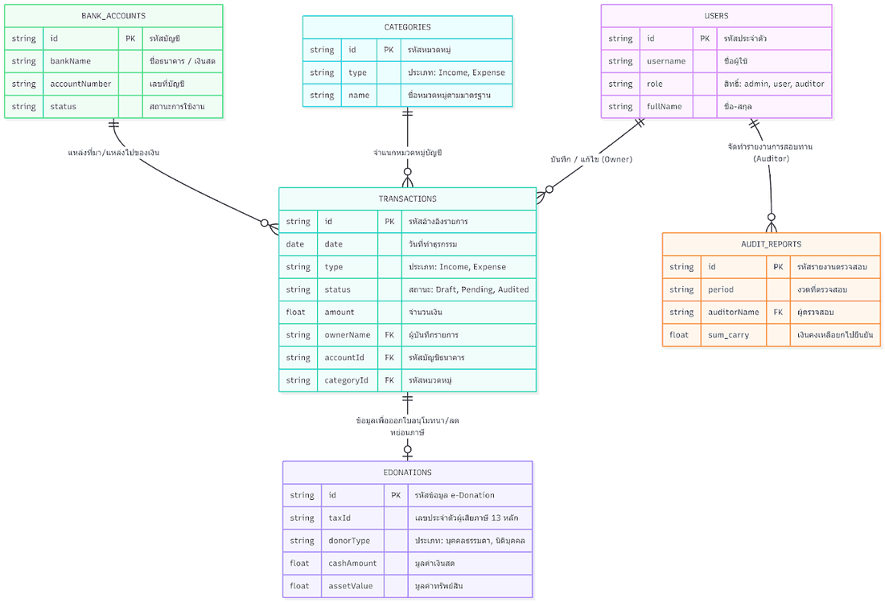
ภาพที่ 2 · ER Diagram — ตารางหลัก BANK_ACCOUNTS · CATEGORIES · USERS · TRANSACTIONS · AUDIT_REPORTS · EDONATIONS ออกแบบให้ติดตามเส้นทางเงิน (Traceability) ได้ ทุกรายการมีที่มา/ที่ไปของเงิน ผู้บันทึก และสถานะ Draft · Pending · Audited (แตะเพื่อขยาย) - ผู้บันทึก (Maker)ไวยาวัจกร
- ผู้ตรวจสอบ (Checker)คณะกรรมการ
- ผู้อนุมัติ (Approver)เจ้าอาวาส
- ผู้สอบทาน & สาธารณะ (Auditor & Public)บุคคลภายนอก + เปิดเผยต่อสาธารณะ
สี่บทบาทตามภาพที่ 1 — แบ่งหน้าที่ชัดเจนเพื่อให้เกิดการถ่วงดุลอำนาจ (Checks and Balances) ตามหลักธรรมาภิบาล
คลิปประกอบ · D₁ · ตรวจร่างรูปแบบ · เปิดบน YouTube ↗ ตัวเล่นจาก YouTube จะโหลดเมื่อกดเล่นเท่านั้น (ใช้โหมดความเป็นส่วนตัวขั้นสูงของ YouTube)
อ้างอิง: รายงานความก้าวหน้า ข้อ 1.3 (Expert Review) · ตารางชี้แจงการแก้ไขตามข้อเสนอแนะรอบ 2 เดือน · ตารางที่ 6.2 ข้อ 2–5 · ภาคผนวก ค.3 (ภาพที่ 1–2) · ภาคผนวก ง.3 (ภาพถ่ายการตรวจประเมิน — แสดงเฉพาะฉบับเบลอ ส่วนรายชื่อ วันตรวจประเมินรายบุคคลและหนังสือเชิญ/ตอบรับ ไม่เผยแพร่ในหน้านี้) · ส่งบทความวิจัยฉบับที่ 1 เข้าสู่ระบบวารสารวิชาการเมื่อ 23 มิ.ย. 2569 (รหัสบทความ 297492)
- 10/10ผู้เชี่ยวชาญ
-
กรกฎาคม – สิงหาคม 2569 · เดือนที่ 5–6
D₁ → R₂ · สร้างและพร้อมใช้แพลตฟอร์มเสร็จ ผ่านทดสอบ และแจ้งข้อมูลลิขสิทธิ์
นำผลปรับแก้จากผู้เชี่ยวชาญมาพัฒนาเป็นแพลตฟอร์มดิจิทัล "ระบบบัญชีวัดไทยใสใส" ให้ทำงานครบฟังก์ชันหลักที่จำเป็นต่อการทดลอง ได้แก่ การบันทึกข้อมูล การเรียกดูข้อมูล การจัดทำรายงาน และการตรวจสอบย้อนกลับของรายการ ผ่านการทดสอบก่อนใช้งานจริง แล้วเสร็จในเดือนกรกฎาคม 2569
- เอกสาร
- หนังสือแสดงการแจ้งข้อมูลลิขสิทธิ์ · กรมทรัพย์สินทางปัญญา
- ทะเบียนข้อมูลเลขที่ / คำขอแจ้งข้อมูลเลขที่
- ว1.001136 / 477339
- แจ้งข้อมูลเมื่อ · ออกเอกสารเมื่อ
- 2 สิงหาคม 2569 · 28 สิงหาคม 2569
- ประเภท / ลักษณะงาน
- วรรณกรรม · โปรแกรมคอมพิวเตอร์
- ชื่อผลงาน
- โปรแกรมระบบสารสนเทศบริหารจัดการธรรมาภิบาลทางการเงินของนิติบุคคลวัดไทย (เว็บแอปพลิเคชันวัดไทยใสใส)
ตามหมายเหตุในเอกสาร หนังสือนี้เป็นการแจ้งข้อมูลลิขสิทธิ์ ไม่ใช่การรับรองความเป็นเจ้าของลิขสิทธิ์ (หากมีข้อพิพาท ศาลเป็นผู้วินิจฉัย) — แสดงเพื่อยืนยันว่าผลงานถูกบันทึกข้อมูลไว้ตามวันเวลาข้างต้น · ตัดส่วนลายมือชื่อเจ้าหน้าที่ออกจากภาพแล้ว
อ้างอิง: รายงานความก้าวหน้า ตารางที่ 6.2 ข้อ 6 (ความพร้อมของแอปพลิเคชันก่อน Pilot Study) · ภาคผนวก ค.3 · เอกสารแจ้งข้อมูลลิขสิทธิ์ ฉบับที่แสดงข้างต้น
-
16 มิถุนายน – 10 กรกฎาคม 2569 · ระยะเตรียมการ (Plan)
R₂ · ทำให้วัดต้นแบบ "พร้อมทางสถาบัน" ก่อนใช้เทคโนโลยีก่อนจะมีแอป วัดต้องมีตัวตนทางกฎหมายและช่องทางการเงินครบเสียก่อน
ช่วงนี้ใช้เวลาและทรัพยากรมากที่สุดของการปฏิบัติการ ผู้วิจัยเดินทางไปกับเจ้าอาวาสและไวยาวัจกรด้วยตนเองทุกหน่วยงาน ผลที่พบคือ อุปสรรคของวัดเล็กไม่ได้อยู่ที่ตัวเทคโนโลยี แต่อยู่ที่ต้นทุนการปฏิบัติตามระเบียบ ได้แก่ ระยะทาง เวลา การนัดหลายฝ่ายให้มาพร้อมกัน และการรออนุมัติจากส่วนกลางที่ผู้ปฏิบัติในพื้นที่ติดตามสถานะเองไม่ได้
ความลำบาก: ลำดับการแก้ข้อจำกัดเชิงระบบ (ตามบันทึกภาคสนาม)- 16 มิ.ย. สำรวจสถานะวัด: ไม่มีตราตั้งไวยาวัจกร · ไม่มีเลขประจำตัวหน่วยรับบริจาค · หยุดออกใบอนุโมทนาบัตรมาตั้งแต่ ม.ค. 2569
- 18 มิ.ย. สำนักงานสรรพากรพื้นที่: เอกสารที่ต้องใช้มีหลายรายการ และไม่พบประกาศตั้งวัดในวัด → ค้นประกาศตั้งวัดจากราชกิจจานุเบกษา แล้วนำเจ้าอาวาสไปยื่นด้วยตนเอง
- 23 มิ.ย. ผู้มีอำนาจลงนามอยู่นอกที่ทำการ ต้องตามไปขอลงนามให้ทันนัดยื่นเอกสารวันเดียวกัน → ได้เลขหน่วยรับบริจาคในบ่ายวันนั้น และเข้าระบบ e-Donation ได้ 25 มิ.ย.
- 24–30 มิ.ย. ธนาคารและสำนักงานพระพุทธศาสนาจังหวัด: ต้องมีหนังสือนำ และผู้มีชื่อในบัญชีต้องมาพร้อมกัน → 30 มิ.ย. ลงนามประกาศ/คำสั่งเจ้าอาวาส เปลี่ยนเงื่อนไขถอนเงินเป็น "2 ใน 4" แต่ข้อมูลเดิมยังค้างในระบบธนาคาร ต้องรอสำนักงานใหญ่
- 7–10 ก.ค. ยืนยันตัวตนด้วยรหัส OTP ซึ่งผูกกับโทรศัพท์ของกรรมการคนเดียวและไม่มีระบบติดตามสถานะ → ติดตามทางโทรศัพท์ จนได้รับรหัสวันที่ 10 ก.ค.
"เออ เพิ่มโยมเข้าไปนะดีแล้ว จะได้ช่วย ๆ กัน"— เจ้าอาวาสวัดต้นแบบ เมื่อตัดสินใจขยายผู้มีอำนาจลงนามบัญชีจาก 2 ใน 3 เป็น 2 ใน 4 (ผู้วิจัยเห็นว่า 2 ใน 3 เพียงพอแล้ว)
สิ่งที่วางไว้ก่อนเปิดใช้แอป (ธรรมาภิบาลมาก่อนเทคโนโลยี)- ผู้มีอำนาจลงนามบัญชีวัด 2 ใน 4
- ผู้ช่วยตรวจสอบบัญชีที่ไม่เกี่ยวข้องกับการรับ–จ่ายเงิน
- มาตรฐานเอกสาร: แฟ้มสำคัญ · แฟ้มบัญชี · กล่องพักเอกสารรอลงบัญชี · กล่องแบบขอลดหย่อนภาษี
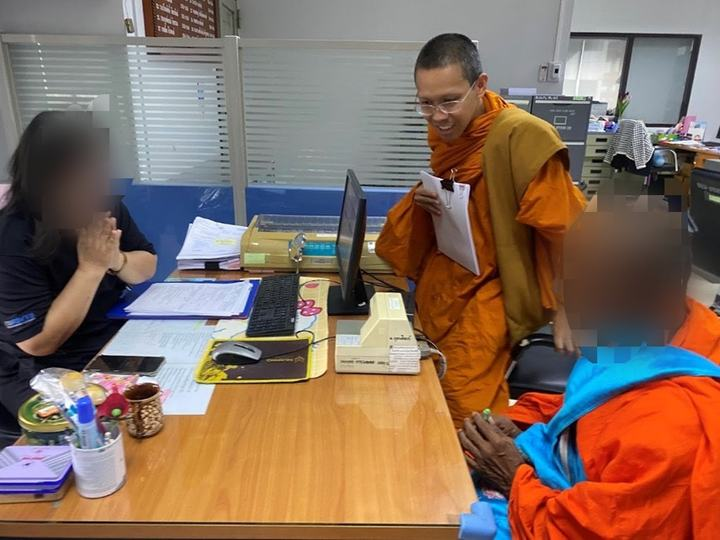
ยื่นขอเลขประจำตัวหน่วยรับบริจาค ณ สำนักงานสรรพากรพื้นที่ 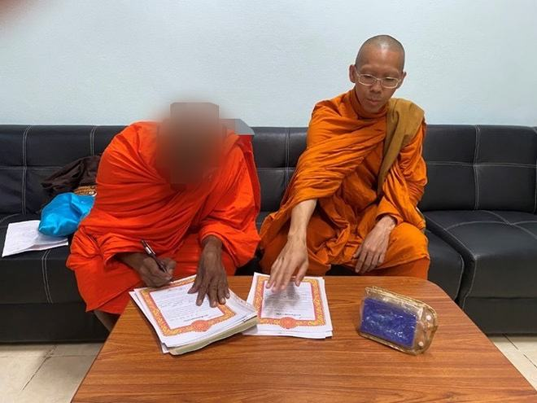
ลงนามประกาศและคำสั่งเจ้าอาวาส ณ สำนักงานพระพุทธศาสนาจังหวัด 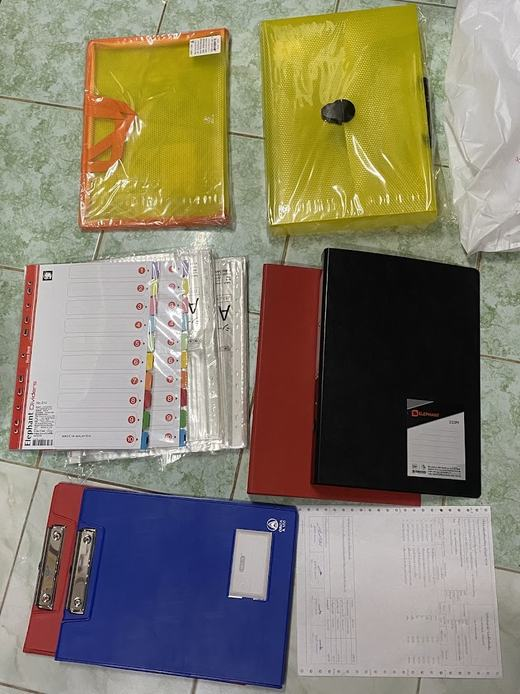
ชุดมาตรฐานเอกสารที่ส่งมอบแก่วัด ภาพภาคสนามระยะ R₂ ปิดบังใบหน้าบุคคลอื่นและป้ายที่ระบุชื่อวัด · ผู้วิจัยปรากฏในภาพในฐานะผู้ร่วมปฏิบัติการ
คลิปประกอบท้ายหัวข้อนี้ — ช่วยทำความเข้าใจเรื่องที่อ่านข้างต้น · กดเล่นได้ที่นี่คลิปประกอบ · R₂ · พร้อมทางสถาบัน · เปิดบน YouTube ↗ ตัวเล่นจาก YouTube จะโหลดเมื่อกดเล่นเท่านั้น (ใช้โหมดความเป็นส่วนตัวขั้นสูงของ YouTube)
อ้างอิง: ร่างผลการวิจัย R₂ บทที่ 4 ข้อ 4.2.2.1 (ฉบับร่าง) ข้อ ๑.๒–๑.๓ · ตารางที่ 4.5 · ภาพที่ 4.1, 4.3, 4.5 · ปูมการวิจัย LOG-R₂
-
9 – 24 กรกฎาคม 2569 · PAR วงจรที่ 1
R₂ · วงจรที่ 1 — อบรมแบบค่อยเป็นค่อยไป + พัฒนาระบบร่วมกับผู้ใช้นัดแค่ผู้ประสานงานหลัก แต่กรรมการมารอกันทั้งวัด
การอบรมกรรมการบริหารการเงินครั้งแรกเมื่อ 9 ก.ค. ผู้วิจัยนัดเพียงผู้ประสานงานหลัก แต่เมื่อถึงวัดพบว่ากรรมการบริหารการเงินทุกคนและผู้ใหญ่บ้านมารออยู่แล้ว เพราะกรรมการส่วนใหญ่เป็นผู้สูงอายุ ผู้วิจัยจึงสอนเฉพาะการเข้าสู่ระบบและการบันทึกรายรับ–รายจ่ายพื้นฐานก่อน ส่วนการตรวจสอบบัญชีและการทำรายงานค่อยอบรมเมื่อถึงรอบปิดบัญชี
"แหม ท่านมาไกลกัน เราอยู่กันแค่นี้หน้าวัด ไม่มาไม่ได้"— ไวยาวัจกร ตอบเหตุผลที่กรรมการมารอกัน
ความลำบาก: สิ่งที่ไม่ปรากฏในการทดสอบภายใน แต่พบเมื่อใช้จริง- ระบบแบบย่อ (Fast System) บันทึกรายรับบางประเภทและรายการโอนระหว่างบัญชีไม่ได้ · เมนูย่อยบางส่วนไม่แสดงผล · ลบรายการที่บันทึกผิดไม่ได้ → ผู้วิจัยและผู้ช่วยวิจัยด้านเทคโนโลยีสารสนเทศ ปรับปรุงระบบในคืนเดียวกัน (19.30–01.15 น.)
- ความตึงเครียดระหว่างการควบคุมภายในกับความโปร่งใส: ระบบเดิมแสดงยอดเงินหลังผ่านการตรวจสอบ แต่ผู้ใช้ในวัดอยากเห็นยอดล่าสุดตลอดเวลา → ปรับหน้าแดชบอร์ดให้แสดงยอดคงเหลือแบบทันที (Real-time) และให้ผู้ใช้ทุกบทบาทเรียกดูรายงานได้ โดยกำกับสถานะ "รอตรวจสอบ" ไว้
- 24 ก.ค. นิติบุคคลวัดสมัครแอปธนาคารเพื่อตรวจสอบยอดรับบริจาคเองไม่ได้ และอีเมลยืนยันไม่ถูกเปิด → เจ้าหน้าที่ธนาคารส่งข้อมูลใหม่ ทดสอบโอน 99 บาทสำเร็จ
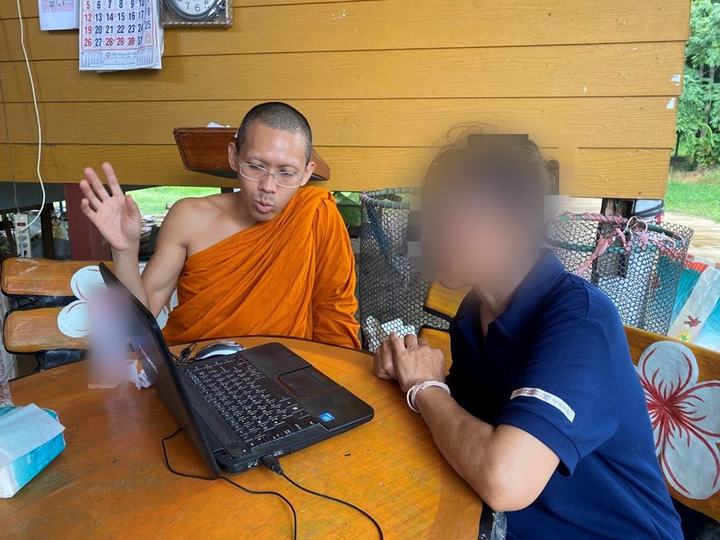
ฝึกบันทึกข้อมูลกับกรรมการฝ่ายการเงิน 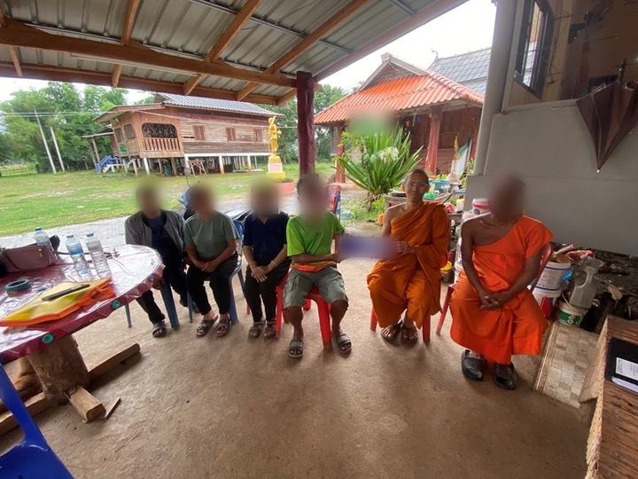
คณะกรรมการร่วมทดลองระบบ และป้าย QR Code รับบริจาค ภาพภาคสนามระยะ R₂ ปิดบังใบหน้า ป้าย QR รับบริจาค และชื่อวัด
อ้างอิง: ร่างผลการวิจัย R₂ บทที่ 4 ข้อ 4.2.2.1 (ฉบับร่าง) ข้อ ๒.๑ · ตารางที่ 4.5 (แถว 24 ก.ค.) · ภาพที่ 4.7 · ปูมการวิจัย LOG-R₂
-
29 กรกฎาคม 2569 · เปิดตัวระบบ
R₂ · ประชุมเชิงปฏิบัติการ + เปิดใช้จริงวันที่ชุมชนเป็นผู้เลือกคนตรวจสอบบัญชีวัดของตนเอง
ที่วัดต้นแบบ ชุมชนร่วมประชุมเชิงปฏิบัติการ (PAR) ลงมติแต่งตั้งคณะกรรมการวัดชุดใหม่ตามแนวธรรมาภิบาล และแต่งตั้งกรรมการผู้ตรวจสอบทางการเงินของวัด (บุคคลที่คนในชุมชนลงมติในที่ประชุม) ทดลองใช้เว็บแอปที่พัฒนาขึ้น และตั้งช่องทางสื่อสารออนไลน์ของวัดตามมติที่ประชุม (กลุ่มเป้าหมายเวิร์กช็อปตามแผน R₂ จำนวน 34 รูป/คน)
ความลำบาก: กว่าจะถึงวันนี้ ต้องจัดให้ถูกต้องตามกฎหมายก่อนทุกขั้น- ประชุมแต่งตั้งไวยาวัจกรตาม พ.ร.บ.คณะสงฆ์ร่วมกับเลขานุการเจ้าคณะตำบล → ขอให้เจ้าคณะอำเภอรับรองการแต่งตั้ง → แจ้งสำนักงานพระพุทธศาสนาจังหวัดรับทราบ
- ประสานสำนักงานสรรพากรพื้นที่ให้ออกเลขประจำตัวหน่วยรับบริจาคให้วัด
- เพิ่มชื่อไวยาวัจกรและกรรมการชุดใหม่ในบัญชีธนาคารของวัด เพื่อให้เชื่อมระบบ e-Donation กับกรมสรรพากรได้
- จัดเตรียมระบบอินเทอร์เน็ตในวัดชนบท และเสนอตั้งคณะกรรมการตรวจสอบทางการเงิน
รายงานระบุว่าวัดต้นแบบมีความพร้อม 100% ในการเข้าสู่ระยะทดลองใช้ (PAR Cycle 1–3) ก.ค.–ก.ย. 2569
ฟีเจอร์ที่ถูกทดสอบจริงในวันนี้- บทบาทผู้ตรวจสอบ (Auditor) ที่ชุมชนเป็นผู้เลือก
- e-Donation เชื่อมสรรพากร
- หน้าเว็บสาธารณะให้ชาวบ้านดูเอง
ภาพภาคสนามเพิ่มเติมวันประชุม (วันอาสาฬหบูชา 06.00–10.00 น.) — แตะภาพเพื่อขยาย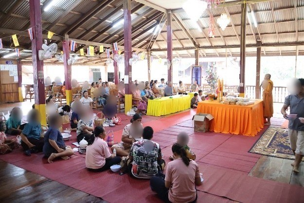
บรรยากาศการประชุมเชิงปฏิบัติการ 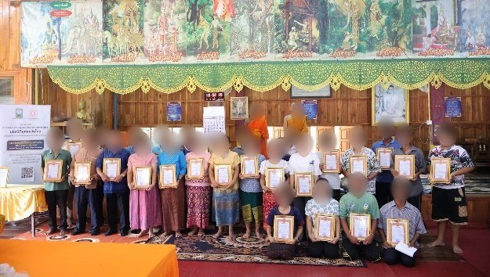
การแต่งตั้งกรรมการวัดชุดใหม่ตามแนวธรรมาภิบาล 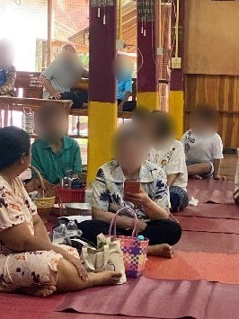
การทดลองใช้เว็บแอปบนมือถือ มีพระภิกษุร่วมพิธี 5 รูป รวมทั้งเลขานุการเจ้าคณะตำบลที่ผู้วิจัยนิมนต์มาสังเกตการณ์ เพื่อเชื่อมผลทดลองระดับวัดสู่การปกครองคณะสงฆ์ในพื้นที่ · ที่ประชุมเสนอชื่อบุคคลเพิ่มอีก 5 คนเป็นกรรมการวัด และเป็นผู้เสนอและลงมติเลือกผู้ช่วยตรวจสอบบัญชีประจำเดือนเอง · แม้วัดจัดช่องทางรับบริจาคหลายแบบกลางศาลา (QR Code e-Donation ขันรับเงิน ต้นผ้าป่า จุดถวายสิ่งของ) ผู้คนส่วนใหญ่ยังเลือกปักธนบัตรบนต้นผ้าป่า มีเพียงคนรุ่นหนุ่มสาวบางส่วนที่ถ่ายภาพ QR Code เก็บไว้
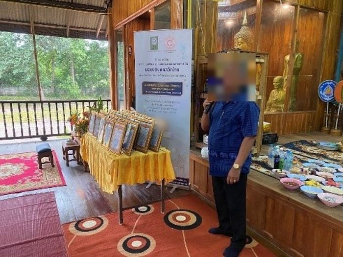
การคัดเลือกตัวแทนชุมชนฝ่ายตรวจสอบในที่ประชุม 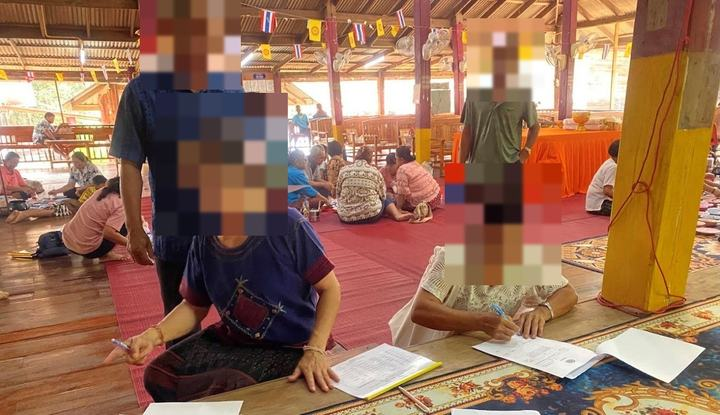
กรรมการหลายคนตรวจนับและบันทึกยอดเงินบริจาคกลางศาลา 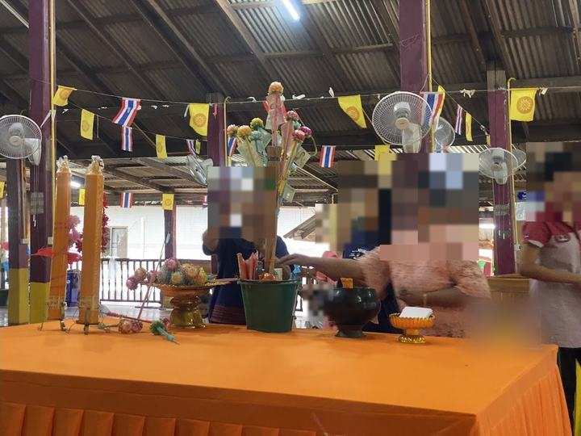
จุดรับบริจาคหลายช่องทางกลางศาลา ภาพชุดแรกจากภาคผนวก ง.5 ของรายงานความก้าวหน้า · ภาพชุดเพิ่มเติมจากร่างผลการวิจัย R₂ ปิดบังใบหน้าทุกคนเพื่อคุ้มครองข้อมูลส่วนบุคคล และไม่ระบุชื่อวัดต้นแบบ
คลิปประกอบท้ายหัวข้อนี้ — ช่วยทำความเข้าใจเรื่องที่อ่านข้างต้น · กดเล่นได้ที่นี่คลิปประกอบ · R₂ · ประชุมเชิงปฏิบัติการและเปิดใช้จริง · เปิดบน YouTube ↗ ตัวเล่นจาก YouTube จะโหลดเมื่อกดเล่นเท่านั้น (ใช้โหมดความเป็นส่วนตัวขั้นสูงของ YouTube)
อ้างอิง: รายงานความก้าวหน้า ข้อ 1.4 (สถานะความพร้อม) · ข้อ 2.6 · ภาคผนวก ง.5 · ตารางที่ 6.1 เดือนที่ 5 · แผนบริหารความเสี่ยง ข้อ 1 · ร่างผลการวิจัย R₂ ข้อ ๒.๒ (ภาพที่ 4.9–4.11)
-
กรกฎาคม – กันยายน 2569 · 3 รอบบัญชีรายเดือน (ช่วงเข้าพรรษา)
R₂ · ใช้จริง 3 รอบบัญชี (PAR Cycle 1–3)ใช้จริงเดือนต่อเดือน — ตรวจ ประกาศ ปรับแก้ แล้ววนต่อ
ระบบถูกใช้ตามรอบบัญชีรายเดือน 3 รอบ (ก.ค. · ส.ค. · ก.ย.) ทุกสิ้นเดือนมีการตรวจและประกาศบัญชีของวัด พร้อมกิจกรรมกระตุ้นการรับรู้ระบบ e-Donation ในชุมชน 3 ระยะ (ระยะแรกในเดือนสิงหาคม) และสื่อประชาสัมพันธ์ของชุมชนหลังการประชุมปฏิบัติการ ก่อนสำรวจความพึงพอใจของประชาชนในพื้นที่ 400 ชุดหลังรอบตรวจบัญชีสุดท้าย
ความลำบาก / ความเสี่ยงที่ต้องเตรียมแผนรองรับเป้าหมายตัวชี้วัด (KPI) ที่ตั้งไว้ล่วงหน้า — ผลจริงจะรายงานหลังจบ R₂- ต้องรักษาการมีส่วนร่วมของชุมชนห่างไกลให้ต่อเนื่องครบ 3 รอบ — หากวัดต้นแบบถอนตัวหรือพร้อมต่ำกว่าเกณฑ์ มีแผนสำรองวัดต้นแบบแห่งที่ 2–3
- การวิจัยเชิงปฏิบัติการต้องจดบันทึกประจำวัน (ปูม) ตลอดช่วง 29 ก.ค.–30 ก.ย. เพื่อถอดบทเรียนและปรับรูปแบบตามสถานการณ์จริงของวัด
- ≥ 95%รายการรับ–จ่ายย้อนตรวจ
ถึงหลักฐานต้นทางได้ - 100%รายการสำคัญมี
ร่องรอยการแก้ไข - ≥ 80%ผู้ใช้ทำภารกิจหลัก
ได้เอง (Usability) - ≥ 4.00ความพึงพอใจเฉลี่ย
(เต็ม 5)
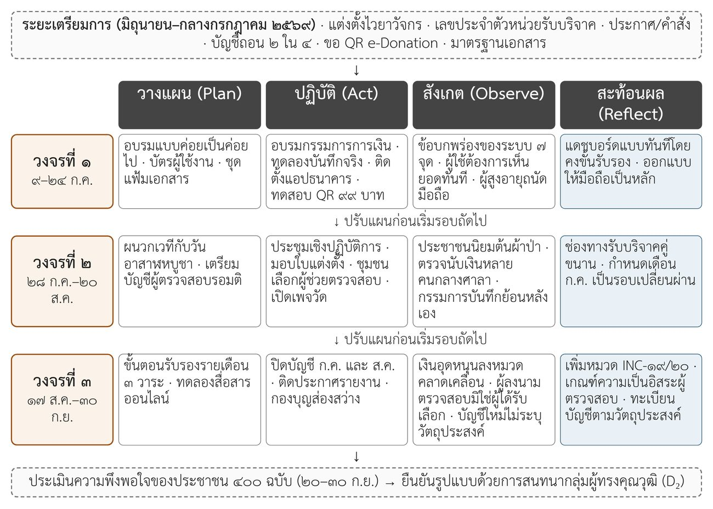
วงจร Plan–Act–Observe–Reflect 3 รอบ — วงจรที่ 1 (9–24 ก.ค.) · วงจรที่ 2 (28 ก.ค.–20 ส.ค.) · วงจรที่ 3 (17 ส.ค.–30 ก.ย.) ผลสะท้อนของแต่ละรอบเป็นฐานของการวางแผนรอบถัดไป ไม่ใช่การทดลองครั้งเดียว (ภาพที่ 4.6 ในร่างผลการวิจัย · แตะเพื่อขยาย) คลิปประกอบท้ายหัวข้อนี้ (2 คลิป) — ช่วยทำความเข้าใจเรื่องที่อ่านข้างต้น · กดเล่นได้ที่นี่ปูมการวิจัยเชิงปฏิบัติการ (Action Research Logbook R₂) — บันทึกประจำวันตั้งแต่ 29 ก.ค. ถึง 30 ก.ย. 2569 จัดทำสำหรับคณะผู้วิจัยเท่านั้น ไม่เผยแพร่แก่บุคคลทั่วไป ตามหลักจริยธรรมการวิจัย รายงานจึงเปิดเผยเพียงบางส่วนให้ผู้ประเมินตรวจสอบ ข้อมูลบัญชีจริงของวัดต้นแบบก็ไม่เผยแพร่ในหน้านี้เช่นกัน
คลิปประกอบที่ 1 จาก 2 · R₂ · PAR Cycle 1–3 · เปิดบน YouTube ↗ คลิปประกอบที่ 2 จาก 2 · R₂ · PAR Cycle 1–3 · เปิดบน YouTube ↗ ตัวเล่นจาก YouTube จะโหลดเมื่อกดเล่นเท่านั้น (ใช้โหมดความเป็นส่วนตัวขั้นสูงของ YouTube)
อ้างอิง: รายงานความก้าวหน้า ข้อ 1.4 · ข้อ 2.6 · ตารางที่ 6.3 (KPIs ข้อ 1, 2, 8, 9) · ภาคผนวก ง.5 (ปูม R₂) · แผนบริหารความเสี่ยง ข้อ 1
-
สิงหาคม – กันยายน 2569 · วงจรที่ 3 และสะท้อนผล (Reflect)
R₂ · จากผู้รับระบบ สู่ผู้ใช้ระบบชุมชนเริ่มลงมือทำเอง ก่อนที่ผู้วิจัยจะร้องขอ
- 17 ส.ค. ตกลงขั้นตอนตรวจบัญชีรายเดือน: กรรมการฝ่ายการเงินตรวจสอบ → ผู้ช่วยตรวจสอบลงนาม → เจ้าอาวาสรับรอง → ส่งภาพเอกสารให้ผู้วิจัยบันทึกสถานะในระบบ → พิมพ์รายงานติดประกาศในวัด
- 20 ส.ค. รายงานรับ–จ่ายเดือน ก.ค. ที่ผ่านการรับรองแล้วถูกติดประกาศบนศาลาการเปรียญ — วงจร บันทึก → กระทบยอด → ตรวจสอบ → รับรอง → เปิดเผย เกิดขึ้นครบจริงในวัดต้นแบบ
- ชาวบ้านช่วยกันติดตั้งป้ายไม้อัดสำหรับติดประกาศที่ประตูศาลา หลังผู้วิจัยเพียงกล่าวถึงระหว่างมื้อกลางวัน · ผู้ประสานงานหลักเริ่มเผยแพร่กิจกรรมวัดผ่านเพจเองและเสนอเพิ่มผู้ดูแลเพจจากหลายกลุ่ม · ผู้ดูแลเพจในพื้นที่ทำโพสต์ประชาสัมพันธ์งานกฐินพร้อม QR Code รับบริจาคของวัดและเผยแพร่เอง (23 ก.ย.)
- ปลาย ก.ย. ผู้วิจัยนำข้อค้นพบกลับไปสะท้อนผลร่วมกับผู้ร่วมวิจัยและชุมชน พร้อมเก็บความคิดเห็นด้วยแบบสอบถามจากผู้มาร่วมกิจกรรมทางศาสนาของวัด เพื่อให้ผู้ได้รับผลจากการเปลี่ยนแปลงมีส่วนร่วมในขั้นการประเมินผล
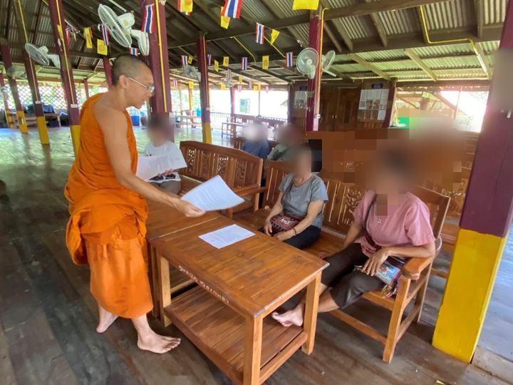
การสะท้อนผลและเก็บความคิดเห็นจากผู้ร่วมวิจัยและชุมชน 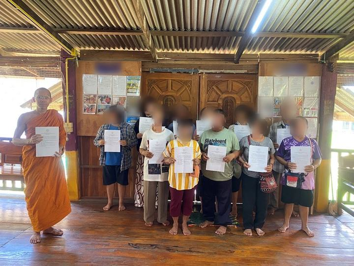
ผู้ร่วมวิจัยและชุมชน ระยะสิ้นสุดการปฏิบัติการ (ก.ย. 2569) ไม่นำภาพที่ปรากฏชื่อวัด ป้าย QR รับบริจาคจริง เอกสารราชการ และข้อมูลบัญชีจริงมาเผยแพร่ · ปิดบังใบหน้าทุกคนยกเว้นผู้วิจัย · ผลเชิงปริมาณจะรายงานเมื่อรายงานฉบับสมบูรณ์เสร็จ
คลิปประกอบท้ายหัวข้อนี้ (2 คลิป) — ช่วยทำความเข้าใจเรื่องที่อ่านข้างต้น · กดเล่นได้ที่นี่คลิปประกอบที่ 1 จาก 2 · R₂ · จากผู้รับระบบสู่ผู้ใช้ระบบ · เปิดบน YouTube ↗ คลิปประกอบที่ 2 จาก 2 · R₂ · จากผู้รับระบบสู่ผู้ใช้ระบบ · เปิดบน YouTube ↗ ตัวเล่นจาก YouTube จะโหลดเมื่อกดเล่นเท่านั้น (ใช้โหมดความเป็นส่วนตัวขั้นสูงของ YouTube)
อ้างอิง: ร่างผลการวิจัย R₂ บทที่ 4 ข้อ 4.2.2.1 (ฉบับร่าง) ข้อ ๒.๓ · ๓.๑–๓.๒ · ๔.๓ · ภาพที่ 4.19, 4.23 · ปูมการวิจัย LOG-R₂
-
30 ตุลาคม 2569 (ศุกร์) · 13.00 น. · เดือนที่ 8
D₂ · สนทนากลุ่มผู้ทรงคุณวุฒิ ยืนยันรูปแบบผู้ทรงคุณวุฒิ 9 รูป/คน จาก 6 ภาคส่วน ยืนยันรูปแบบ — ไม่มีผู้ใดคัดค้านหลักการ
ผู้วิจัยจัดการสนทนากลุ่มเฉพาะ (Focus Group Discussion) ณ ห้องประชุมของหน่วยงานกำกับด้านพระพุทธศาสนาระดับจังหวัด ใช้เวลาราว 2 ชั่วโมง โดยนำเสนอผลการวิจัยที่ผ่านมา (R₁ · D₁ · R₂ · ผลสำรวจความพึงพอใจของประชาชน 400 คน) รูปแบบโครงสร้าง 5 ชั้น แบบจำลองที่บูรณาการหลักพุทธธรรม และข้อเสนอเชิงกฎหมาย 5 ระดับ แล้วเชิญผู้ทรงคุณวุฒิให้ความเห็นตามภาคส่วน และอภิปรายร่วมกัน 4 ประเด็น คือ ลำดับการสร้างรูปแบบ · บทบาทของหน่วยงาน · ความเสี่ยงและข้อเสนอเชิงกฎหมาย · ความเชื่อมั่นและการขยายผล — บันทึกเสียงและถอดความแบบคงสาระ (Clean Verbatim)
ผู้ทรงคุณวุฒิมาจากฝ่ายปกครองคณะสงฆ์ หน่วยงานกำกับ หน่วยงานตรวจสอบ หน่วยงานด้านภาษี หน่วยงานส่งเสริม และผู้นำชุมชน · มีเจ้าหน้าที่หน่วยงานตรวจสอบระดับจังหวัดร่วมสังเกตการณ์ 7 คน และคณะผู้วิจัย 4 รูป/คน
- 9ผู้ทรงคุณวุฒิ
6 ภาคส่วน - 4องค์ประกอบ
เห็นพ้อง - 5เห็นพ้อง
โดยมีเงื่อนไข - 1ยังไม่ได้ข้อยุติ
(ข้อเสนอเชิงกฎหมาย) - 0ข้อคัดค้าน
หลักการรูปแบบ
ตัวเลข 4 / 5 / 1 นับจากองค์ประกอบและประเด็นของร่างรูปแบบ 10 รายการที่นำเข้าพิจารณา
บรรยากาศการสนทนากลุ่ม · 30 ต.ค. 2569 — เบลอใบหน้าผู้ทรงคุณวุฒิ ผู้สังเกตการณ์ และบุคคลในฉากหลังทุกคน ไม่เบลอเฉพาะผู้วิจัย · แตะภาพเพื่อขยาย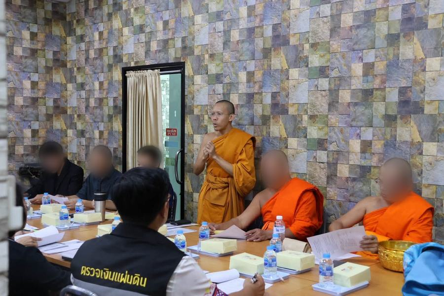
ผู้วิจัยนำเสนอรูปแบบ — ผู้ทรงคุณวุฒิติดตามเอกสารประกอบการสนทนา 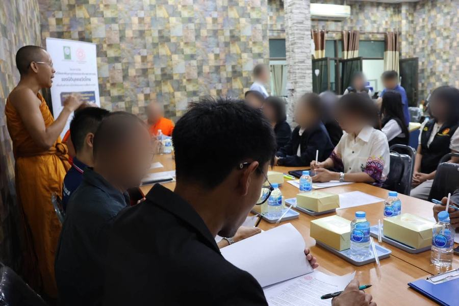
บรรยากาศในห้องประชุม — ผู้เข้าร่วมตามอ่านเอกสารและจดบันทึกขณะผู้วิจัยนำเสนอ 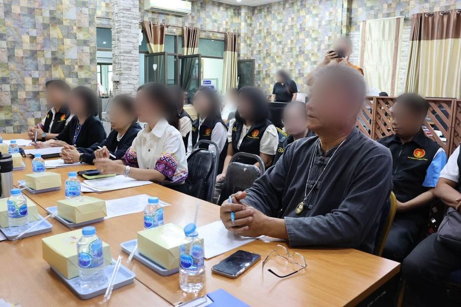
ผู้ทรงคุณวุฒิและผู้สังเกตการณ์ — รับฟังการนำเสนอและจดบันทึก เผยแพร่เฉพาะภาพที่ปิดบังใบหน้าผู้ทรงคุณวุฒิ ผู้สังเกตการณ์ และบุคคลในฉากหลังทุกคน · ไม่ระบุตัวผู้ให้ความเห็นรายบุคคล และความเห็นที่สรุปในหน้านี้ไม่ถือเป็นความเห็นอย่างเป็นทางการของหน่วยงานต้นสังกัด
ผลที่ได้ — ข้อสรุปร่วม 5 ประการ- 1) เริ่มจากฐานทางสถาบันตามกฎหมายก่อนเทคโนโลยี — ต้องส่งมอบงานและแสดงบัญชีให้ครบทุกบัญชีเมื่อเปลี่ยนตัวบุคคล
- 2) แยกหน้าที่ผู้บันทึก · ผู้ตรวจสอบ · ผู้อนุมัติ เป็นกลไกหลักในการลดความเสี่ยง
- 3) แพลตฟอร์มต้องเรียบง่าย ใช้บนมือถือได้ แบ่ง 2 ระดับตามขนาดวัด ยืนยันตัวตนผู้ใช้ และรองรับภาระทางภาษีของวัด
- 4) หน่วยงานรัฐเป็นพี่เลี้ยงและผู้กำหนดมาตรฐาน โดยให้ชุมชนและเครือข่ายจิตอาสาร่วมตรวจสอบ
- 5) ขยายผลค่อยเป็นค่อยไป ตามความพร้อมของคณะสงฆ์และวัด
"เราต้องเข้าใจว่าเจ้าอาวาสมาแล้วอาจจะไป แต่วัดยังอยู่ เพราะฉะนั้นถ้าเราสามารถทำให้เป็นระบบอย่างที่นำเสนอได้ ก็น่าอนุโมทนาว่าจะเข้าสู่การตรวจสอบความสุจริต"— ผู้ทรงคุณวุฒิท่านหนึ่งในที่ประชุม (ไม่ระบุตัวตน) ต่อประเด็นฐานทางสถาบันก่อนเทคโนโลยี
สิ่งที่ผู้ทรงคุณวุฒิเพิ่มให้ ซึ่งไม่ปรากฏในระยะก่อนหน้า- ภาษีเมื่อวัดจ้างทำของ — แม้วัดได้รับยกเว้นภาษีในนามของวัด แต่เมื่อจ้างทำของ เช่น จ้างก่อสร้าง วัดยังต้องติดอากรแสตมป์ในสัญญาจ้างและหักภาษี ณ ที่จ่ายแล้วนำส่ง ซึ่งที่ผ่านมามักไม่ปรากฏในระบบ ผู้วิจัยจึงบรรจุไว้ในเสาที่ 2 ของแบบจำลองเป็นฟังก์ชันที่วัดเลือกใช้ และเป็นข้อเสนอให้หน่วยงานด้านภาษีจัดทำคู่มือภาษีสำหรับวัด
- ส่งมอบงานและแสดงบัญชีให้ครบ — ผู้ทรงคุณวุฒิฝ่ายกำกับยกข้อเท็จจริงจากเรื่องร้องเรียน 2 เรื่องในเวลาเพียง 2 เดือน (ไม่ส่งมอบบัญชีเมื่อเปลี่ยนตัวบุคคล) และชี้ว่าวัดจำนวนมากรายงานเพียงบัญชีหลัก 1–2 บัญชี จึงไม่ทราบว่าวัดมีกี่บัญชีทั้งหมด
- วัดเล็กต้องใช้ได้จริง — ผู้ทรงคุณวุฒิเสนอให้แพลตฟอร์มมี 2 ระดับสำหรับวัดใหญ่และวัดเล็ก ใช้บนโทรศัพท์มือถือได้ และเริ่มจากกลุ่มวัดใกล้เคียง 2–3 วัดที่กำกับซึ่งกันและกัน
ผู้วิจัยปรับร่างแบบจำลอง 5 ประการ → ฉบับสมบูรณ์ "ศรัทธาที่ตรวจสอบได้"- เพิ่มการส่งมอบงานเมื่อเปลี่ยนตัวบุคคล (เสาที่ 1 คนและโครงสร้าง)
- เพิ่มการยืนยันตัวตนผู้ใช้ และภาระทางภาษีของวัด (เสาที่ 2 ระบบดิจิทัล)
- กำหนดให้รายงานสาธารณะต้องเป็นข้อมูลปัจจุบัน
- เพิ่มเครือข่ายวัดใกล้เคียงและจิตอาสา (เสาที่ 3 ชุมชนร่วมตรวจสอบ และฐานพลัง "บวร")
- กำหนดระบบบนมือถือเป็น 2 ระดับตามขนาดวัด
สิ่งที่ยังต้องตัดสินใจ / เงื่อนไขที่ยังเหลือ- ข้อเสนอเชิงนโยบายและกฎหมายยังไม่ได้ข้อยุติ — ผู้ทรงคุณวุฒิไม่คัดค้าน และหน่วยงานกำกับรับได้ แต่ขึ้นกับความพร้อมของคณะสงฆ์ และต้องเลือกระหว่างการบังคับตามกฎหมายกับการค่อยเป็นค่อยไป จึงจัดเป็นขั้นบันไดที่เริ่มจากระดับวัดและเจ้าคณะซึ่งทำได้ทันทีโดยสมัครใจ
- ความปลอดภัยของข้อมูล — ผู้ทรงคุณวุฒิให้ความสำคัญสูงสุด และเสนอให้ยืนยันตัวตนผู้ดูแลระบบด้วยเลขประจำตัวประชาชน มีทีมเฝ้าระวังความผิดปกติ ระยะทดลองใช้อาศัยมาตรฐานความปลอดภัยของบัญชี Google และไม่ได้ทำธุรกรรมโอนเงินเอง ข้อเสนอนี้จึงถูกบรรจุเป็นเงื่อนไขของการขยายผลระยะถัดไป
- ขั้นตอนภาษีอาจสร้างความอึดอัดระหว่างวัดกับผู้รับเหมาในช่วงแรก — จึงให้เป็นฟังก์ชันที่วัดเลือกใช้ ไม่บังคับ
อ้างอิง: ร่างผลการวิจัย บทที่ 4 ข้อ 4.2.3.1 (ฉบับร่าง) ตารางที่ 4.21–4.22 · ภาพที่ 4.26 · ข้อ 4.2.3.4 (การปรับแบบจำลอง) · ความเห็นนำเสนอโดยไม่ระบุชื่อ
- 9ผู้ทรงคุณวุฒิ
-
ตามแผน · ขั้นถัดไป (ภายใน มี.ค. 2570)
D₂ · ขั้นถัดไป · ตามแผนจากรูปแบบที่ยืนยันแล้ว สู่ข้อเสนอเชิงนโยบายและกฎหมาย
- สรุปผลการพิจารณาข้อเสนอเชิงนโยบาย 11 ข้อ ข้อเสนอเชิงกฎหมาย 11 ข้อ และร่างตราสาร 5 ชุด ที่ผู้ทรงคุณวุฒิพิจารณาในที่ประชุม (อยู่ระหว่างวิเคราะห์จากบันทึกเสียง)
- จัดทำ Policy Brief และข้อเสนอแก้ไขกฎ/ระเบียบ ที่อิงหลักฐานจากฐานราก เสนอ วช. สำนักงานพระพุทธศาสนาแห่งชาติ และมหาเถรสมาคม
- จัดพิมพ์คู่มือธรรมาภิบาลวัดไทยใสใส ภายในเดือนที่ 10 · บทความวิจัย 2 เรื่องได้รับใบตอบรับตีพิมพ์ภายในเดือนที่ 11
อ้างอิง: รายงานความก้าวหน้า ข้อ 2.6 · ตาราง "สรุปแนวทางการเก็บรวบรวมและวิเคราะห์ข้อมูล" วัตถุประสงค์ข้อ 3 · แผนการนำผลงานไปใช้ประโยชน์ 4 มิติ · ร่างผลการวิจัย บทที่ 4 ข้อ 4.3.4–4.3.5 (ฉบับร่าง)
สรุป: ข้อค้นพบ → ฟีเจอร์ในเว็บแอป
ตารางนี้ย่อ "ที่มาที่ไป" ของแต่ละฟีเจอร์หลัก — ดูรายละเอียดการใช้งานได้ที่หน้า ฟีเจอร์ & กลไกการเงิน
อยากตรวจสอบหลักฐานฉบับเต็ม?
รายงานความก้าวหน้าฉบับเต็ม (ร่างบทที่ 1–4 ราว 540 หน้า) พร้อมภาคผนวกเปิดให้ผู้ประเมินและหน่วยงานที่เกี่ยวข้องตรวจสอบโดยขอสิทธิ์เข้าถึงผ่านหัวหน้าโครงการ — ติดต่อ tevaprapas.mak@mcu.ac.th